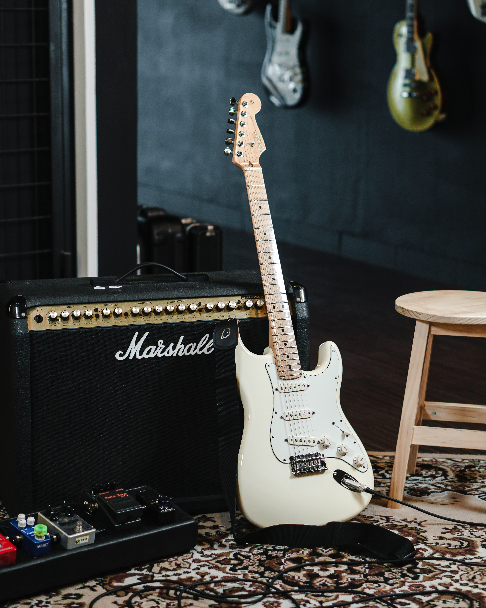

Fender Stratocaster
Otantik Fender tonu için tasarlanmış Player Series manyetikler net ve anlaşılır bir ton sunar. klasikleşmiş Fender sound'una modern bir dokunuş ile gitaristlerin gözdesi haline geldi.
Satın Al